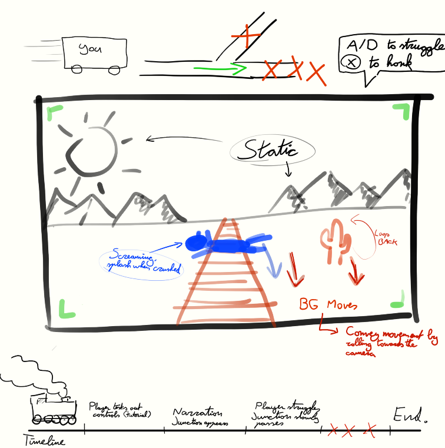

Virtual Encounters is a short narrative experience questioning what makes a game, a game. What if the player has agency but no influence? What if a rhythm game has no input prompts? And above all else, does it even matter whether something is a game or not? The player experiences these topics through three short, experimental games, tied together by the enigmatic Collector.
"Trolley Problem"
In Trolley Problem, I tackle the famous moral dilemma, but with the player in an unusual role: you are the trolley. I deliberately give the player agency (slow down, speed up, honk) but no influence on the end result; driving three people over. After all, you are just the trolley, you have no influence.
Design Goal
The main player experience was helplessness. The player will desperately try every button combination to take a turn, find out its futile, and while watching the railway junction go by, realise they have no influence. After playtesting I found out that the timing of these events is very important: the longer I stretched this moment, the bigger the impact it had.
The final result

A rough sketch including a timeline and movement mechanics
"Jam the Keys"
In this part of the game, the player has to entertain an audience by jamming on their (physical) keyboard. Background music plays as an indication of what to play, but there is no judging, the player is completely free to play the way they want. If the player stops, the audience boos and the music quiets down, a cue for them to continue playing, to which the audience cheers.
Music design
The music went through several overhauls. It had to be rhythmic, catchy, and just the right tempo. Above all, it had to leave room for the player to express themselves on their keyboard. It took two rejected tracks to end up with the final result.
On the right you can listen to some samples here.
Original concept pitch audio. It's full of energy, but too fast, cluttered, and rhythmically overwhelming.Second iteration. Slower, allowing the player to get into a groove. Still not final, it's too full, not leaving enough headroom for player performance.Final iteration, I incorporated the insights I gained from the previous versions. It features a much more interesting rhythm, is not overwhelming, and includes a key moment: a synth solo, where the player can jam at their own pace!
When the player stops jamming, the music quiets down, and the audience stops dancing and starts booing.
"Catch"
In Catch, the player plays a game of catch with a little girl over a fence, with no real progress or reward. The original goal was for the player to consciously decide to stop playing after a while. However, after playtesting, it was found that forcibly removing the game (and the girl) from the player, leaving them with only the idyllic scene and music, was much more impactful, and even made players emotional.
The Collector
Through playtesting I discovered that the three games did leave an impact, but overall the game felt disjointed. That's why I added "The Collector", a figure to guide the player through the experiences. This helped immensely, and gave me the opportunity to give the game a narrative spin.
The Collector appears after each game, and helps the player digest what unfolded.